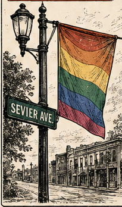

★ Feature Story
This Week's Headline Goes Right Here
A one- or two-sentence deck that says why the story matters — written warm, a little funny, entirely local.

Write the full story right here — everything's on this one page, so don't hold back for a "read more." Open with the scene, then tell folks what's happening and why they'll want to be there.
Keep it neighborly and clear. If it's a rumor, say so. If it's confirmed, say that too. End with where to go, when, and what to bring.